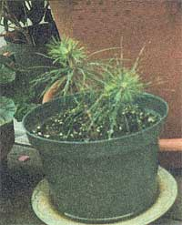
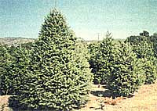

A "how-to" of celebrating Christmas with a living tree.
Whether making a powerful statement about the world's clean air problem and deforestation, or instilling a belief in "Waste not want not" in your children's minds, replanting your Christmas tree is a great redefinition of the way we celebrate the holidays.
When looking for a good tree to unearth a few factors are key. Look for a spruce that is between two and three feet tall. Trees of that type typically have a root ball easy to dig out, light enough to carry, and capable of being transplanted. Spruce is better than a fir because it is less susceptible to root damage. The tree should also be kept cool, at a temperature of 38 to 40°F Higher temperatures will encourage the tree to grow further, according to Scott McEwan, Christmas tree specialist with the Canadian Department of Lands and Resources.
The tree's roots should then be wrapped along with some of the soil and planted in a large galvanized washtub. Periodic watering will be required, of course, while the tree is stored. A cool basement or shed is best for this. Return it to the basement two days after Christmas, where it will stay until the ground thaws, and the risk of heavy frost has passed. Then, we have a replanting ceremony. If you live in an apartment and don't have a basement, you can still enjoy a live tree and plant it in a pre-dug hole right after the holidays, mulching it well, in your own yard or a friend's, or if you live in an area where there is plenty of snow, you can bury the root ball in snow, keeping it watered, and wait until Spring for planting. The advantages to live trees are not limited to increasing good karma; there is no fear of fire since the tree will not dry out or drop its needles like a cut one.
Finding a Christmas tree grower who deals in live trees can be a challenge and should be your last resort. If your land doesn't yield a good candidate, just ask around. Only one in three growers in my area deal in live trees. The extra work involved since roots must be pruned every three to four years to keep the soil ball intact, keeps most growers out of the live tree business, and nursery prices are usually quite prohibitive.
Many countries already have implemented tree recycling programs, where trees are collected curbside and ground up to be used as mulch in city parks. This is a step in the right direction. In 1997 Halifax, Nova Scotia, chipped 9,000 trees which amounted to 230 tons of material.
They had so much, they offered the unused tonnage free to the public. But, assuming one tree per household, less than 7 percent of the dwellings in the country recycled their tree in this manner.
If you feel that even this isn't enough, get out there and find yourself a little tree. Don't bother with the shortness of it, just revel in the satisfaction of caring for a living plant. It is a feeling you will have all year and for years to come-a true extension of the Christmas spirit.
To learn more about free farming, living Christmas trees, and alternative holiday trees: National Christmas Tree Association (414) 276-6410
Califomia Christmas Tree Association (209) 7238823 hitp://www.cachhstmas.com
Common Nama
Balsam Fir
Douglas Fir
(pictured)
Eastern White Pine
Fraser Fir
Leyland Cypress
Monterey Pine
Noble Fir
Red Cedar
Scotch Pine
Virginia Pine
Natural Growing Area
Canada and North Atlantic
regions
Rocky Mountain to West Coast
regions from Canada to
Mexico
North-central and Northeastern
U.S.
Appalachian Mountain region
of North Carolina and
Tennessee
Southeastern U.S.
South California coast
Pacific Northwest
Central and Eastern U.S.
Canadian, Northeastern U.S.,
and Atlantic regions
Southeastern U.S.
Information made available by the National Christmas Tree Assoc.
Don't know what to get your favorite environmentalist for Christmas? Check out Real Goods' high-tech solar and environmentally sound gifts.
For those of you braving it out in the mosquito-infested wilderness, Real Goods solves your problem with its Solar Mosquito Guard. This solar powered device protects you from most species of mosquitoes within a twelve foot radius by using high frequency soundwaves. It is small enough to fit in the palm of your hand and is attached to a key ring for convenient transport. The solar cell on the front of the device allows the battery to recharge in 3 hours. $8.95.
Never spend a fortune on batteries again. The Eco-Charges batteries of all kinds: nicad, alkaline, or zinc-carbon. Works with AAA, AA, C, and D batteries. $54.95.
Look forward to silent nights this Christmas. Noisebuster Extreme removes background noises by counteracting lowfrequency noise with opposite sound waves. Lightweight and portable. Comes with pocket clip and headphones. $69.95.
Want to stop using chemical detergents? Turbo Laundry Disc naturally cleans clothing by employing a system of activated ceramics, magnets, and tourmaline, "the electric gemstone." An organic cleaning agent is created from water. One disc lasts up to two years and is laboratory proven to be both anti-bacterial and hypoallergenic. $49.95.
Real Goods and Earth Care catalogs also offer jewelry, books, greeting cards, and a wide selection of earth-friendly merchandise. Gift wrapping and direct shipping to recipients are available as well.
And for those with slightly broader ambitions, Real Goods also carries the hardware, panels, wiring, batteries and full instructions for a home-built photovoltaic power station as well as similarly capable hydro and wind systems. For a free catalog call 800-762-7325, or reach them on their web site at http://www.realgoods.com.
Jennifer Barros
|
 PHOTO COURTESY OF CALIFORNIA CHRISTMAS TREE GROWERS Potted pine disturbed while digging up our Christmas tree in 1996. |
 |
|